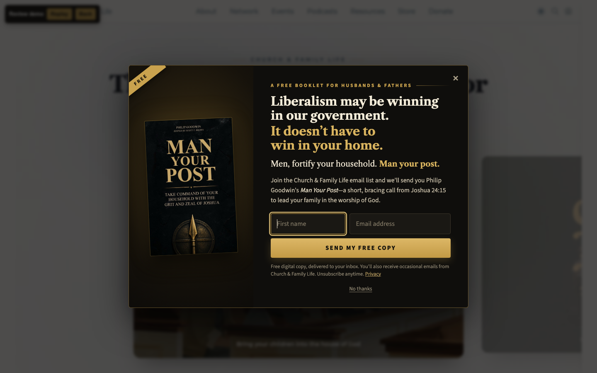
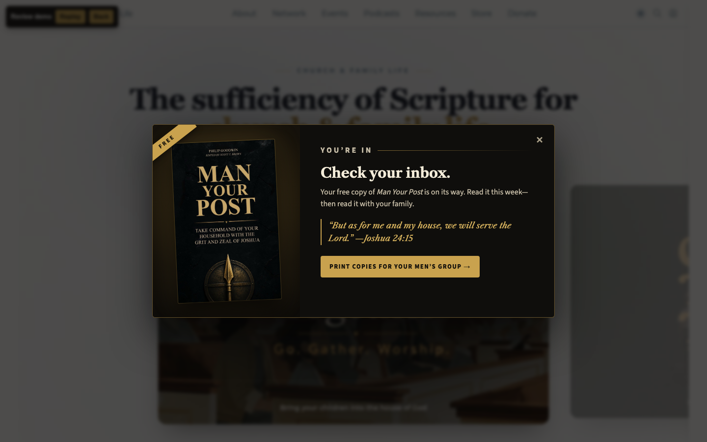
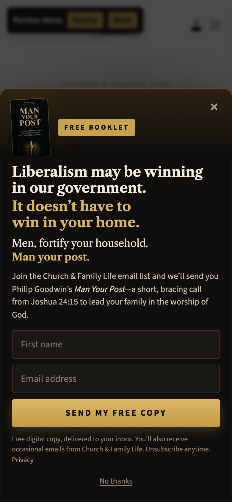
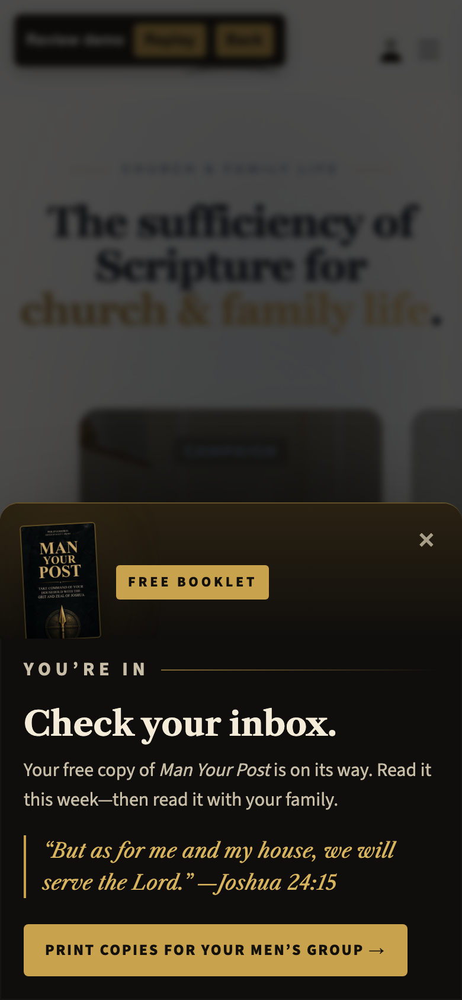

Opens after 9 seconds or 45% scroll (or exit intent on desktop). It stays quiet for 7 days after a close, never shows again after sign-up, and skips checkout/cart/donate pages. Any link with ?free=man-your-post or #man-your-post opens it right away, and that's where the social posts point. On phones it's a bottom sheet.

Desktop, over the live homepage

After sign-up

iPhone (390px)

After sign-up
2 · Social artwork
Click any image for the full-size file to download and post.
Names an ideology, never a candidate or party (the 501(c)(3) line). Links open the popup, so post these only after the popup is live.
Post 1 · today (Wed Nov 4) · Facebook
A lot of Christian families woke up this morning discouraged by last night's results.
Here is what no election can change: God has not handed your household to Washington. He has handed it to you.
Liberalism may be winning in our government. It doesn't have to win in your home.
More than 350 years ago, Puritan pastor Philip Goodwin warned that the enemies of church and nation "attack the home first." His answer wasn't panic. It was a man at his post: praying with his wife and children, opening the Scriptures at his own table, leading his household in the worship of God, and guarding the door.
"But as for me and my house, we will serve the Lord." (Joshua 24:15)
Men, fortify your home. Man your post.
For a limited time, we're giving away Goodwin's booklet Man Your Post free to everyone who joins the Church & Family Life email list:
https://churchandfamilylife.com/?free=man-your-post&utm_source=facebook&utm_medium=social&utm_campaign=man-your-post
Post 1 · today · Instagram (feed + Story)
No election decides who leads your home.
Liberalism may be winning in our government. It doesn't have to win in your household.
In 1655, Philip Goodwin warned that the enemies of church and nation "attack the home first." The answer is not panic. It is a father at his post: the Word open at his table, his family on their knees, the door guarded.
"But as for me and my house, we will serve the Lord." Joshua 24:15
Men, man your post. 📖 Get Man Your Post FREE when you join our email list. Link in bio.
#ManYourPost #FamilyWorship #ChristianFatherhood #BiblicalManhood #Joshua2415 #ChurchAndFamilyLife
Post 1 · today · X
No election decides who leads your home.
Liberalism may be winning in our government. It doesn't have to win in your household.
Men, man your post.
Free booklet, Philip Goodwin's Man Your Post, when you join our email list:
https://churchandfamilylife.com/?free=man-your-post&utm_source=x&utm_medium=social&utm_campaign=man-your-post
Post 2 · Thu/Fri · Facebook · Instagram · X
"Become a faithful keeper of your own vineyard, a watchful overseer of your household, a diligent shepherd of your flock, and a courageous defender of your fort." (Philip Goodwin, 1655)
Your post isn't in Washington. It's at your own table, tonight. Open the Word. Pray with your wife and children. Sing to the Lord together. Small, faithful, daily.
Get Man Your Post free when you join the Church & Family Life email list:
https://churchandfamilylife.com/?free=man-your-post&utm_source=social&utm_medium=social&utm_campaign=man-your-post
Post 3 · weekend / Lord's Day eve · Facebook · Instagram
"Put not your trust in princes, nor in the son of man, in whom there is no help." (Psalm 146:3)
Our hope was never in a ballot. Christ is King, and He has not stepped down this week.
Reformation has always started in the home: one father, one table, one family gathered around the Word. Before Sunday, lead your household in worship tonight.
Men, man your post. Get the booklet free:
https://churchandfamilylife.com/?free=man-your-post&utm_source=social&utm_medium=social&utm_campaign=man-your-post
X post: 250/280 characters (links count as 23).
4 · Decisions & notes
Free digital copy (PDF by email) is what the popup promises. Print stock is 50, so free print copies need a shipping/quantity call first.
Email list wiring: the widget supports a Mailchimp embedded-form URL or a JSON endpoint. It tags sign-ups giveaway-man-your-post so an automation can send the PDF. The demo submits nowhere.
Copy edits from the original line: "but not in your home" → "It doesn't have to win in your home". "maning" → "Man your post." (the book's title as the last word).
Other headline options: "Washington may belong to liberalism. Your home doesn't have to." · "No election decides who leads your home."
Background art was AI-generated for this campaign. All lettering and the real book cover are composited on top, so they're crisp and easy to edit.